🦖 Palestra: Dinossauro assado ou frito?
Dr. Lucas César Frediani Sant'Ana
Professor no IFPR e assessor técnico no Geoparque Caiuá
🔬 Palestra: A Física na Perícia Criminal
Fabiene Barbosa da Silva
Formada em Física pelo IFPR. Cientista Forense da PCPR
📅 Informações do Evento
Petiscaria Viva la Vida, Ivaiporã - PR
Entrada Gratuita!
Sobre o Evento
O Pint of Science é um festival internacional de divulgação científica que acontece em bares, cafés e restaurantes. O objetivo é promover um encontro descontraído entre cientistas e o público para discutir ciência de forma acessível e divertida. O evento é gratuito: o público paga apenas o que consumir no local.
História
O Pint of Science nasceu em 2012, com os neurocientistas Michael Motskin e Praveen Paul do Imperial College London. Eles convidaram pessoas com doenças neurológicas para conhecer seus laboratórios. A experiência foi tão inspiradora que decidiram inverter o processo e levar os cientistas até o público.
O primeiro festival aconteceu em 2013 no Reino Unido. A ideia se espalhou e chegou ao Brasil em 2015, trazida pela jornalista Denise Casatti, com a primeira edição em São Carlos (SP). Desde então, o evento cresceu e, em 2025, completa 10 anos no Brasil.
Edição 2025
Data: 19, 20 e 21 de maio de 2025
Horário: a partir das 19h (horário local)
Tema: "Tempo de Mudanças"
Em 2025, o Pint of Science Brasil foi realizado em 169 cidades, consolidando-se como o maior do mundo. Com mais de 2000 voluntários, o evento reuniu cientistas das cinco regiões do país em espaços públicos para compartilhar ciência de maneira acessível.
Segundo o coordenador nacional Eduardo Bessa, o festival é uma resposta ao atual momento de transformações sociais, políticas e ambientais. O objetivo é aproximar a ciência das pessoas em suas realidades cotidianas.
Pint of Science em Ivaiporã
Data: 20 de maio de 2025
Local: Petiscaria Viva la Vida - Ivaiporã
Horário: 19h
Programação:
- "Você gosta de dinossauro assado ou frito?" – Prof. Lucas (@lukas_sant_ana)
- "A Física na Perícia Criminal: analisando casos reais" – Fabiene Barbosa (@fabienegdr)
O evento foi aberto ao público e gratuito. Foi uma ótima oportunidade para conversar com pesquisadores locais e se aproximar da ciência de forma divertida e descontraída.
Curiosidades Científicas
- Você sabia que a física forense analisa cenas de crime usando leis da física, como conservação de energia e movimento de projéteis?
- Os dinossauros não foram completamente extintos — as aves modernas são seus descendentes diretos!
- A ciência está em todos os lugares: do seu celular ao seu prato de comida.
🎉 Galeria do Evento


 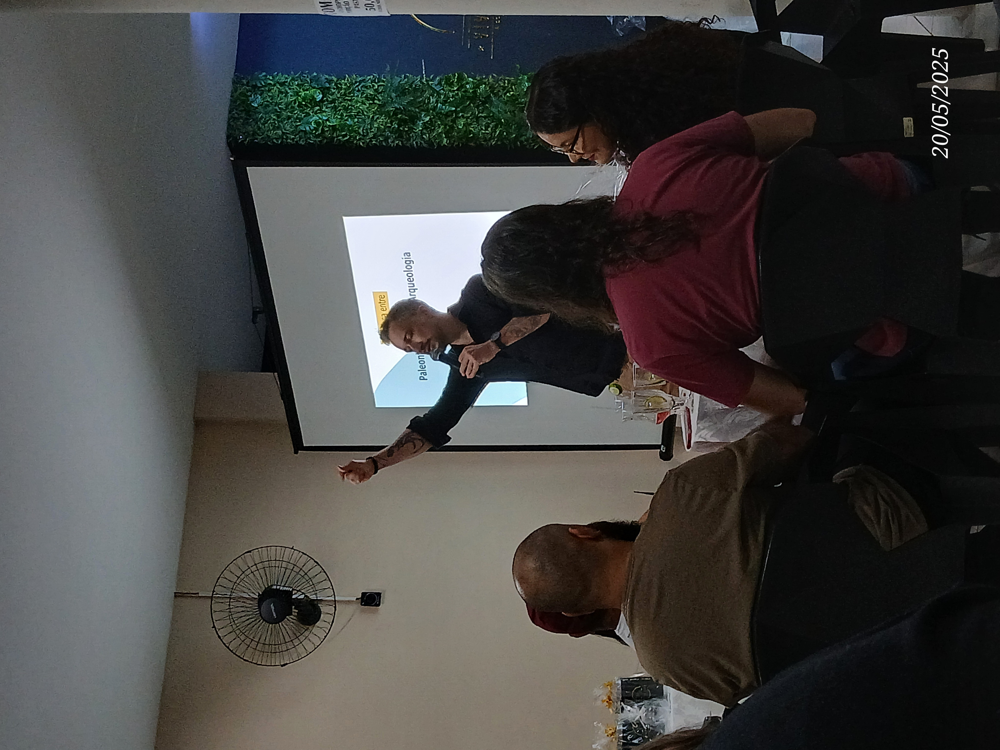
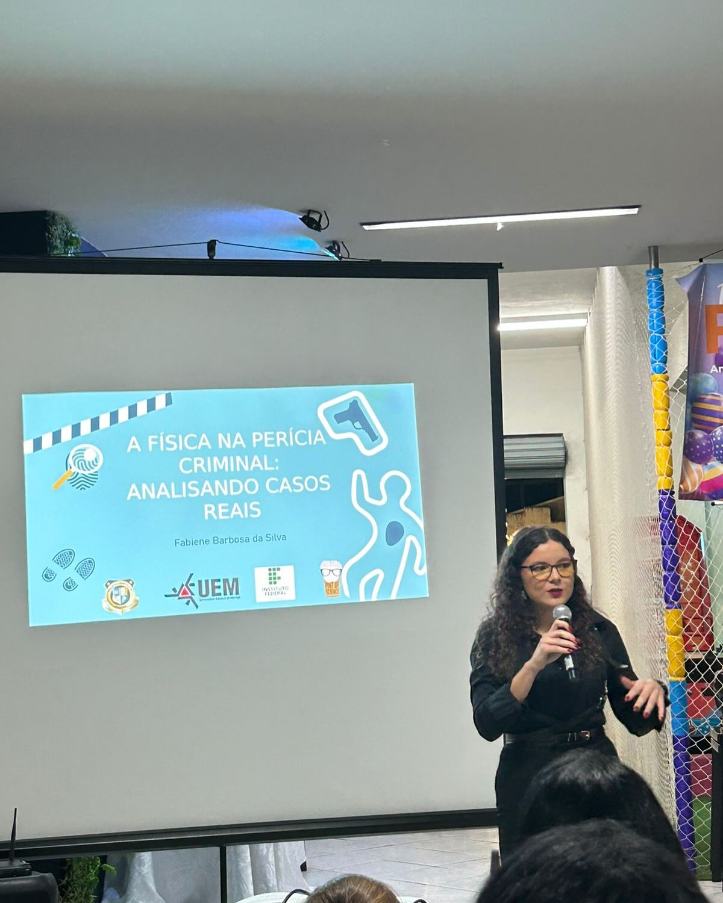
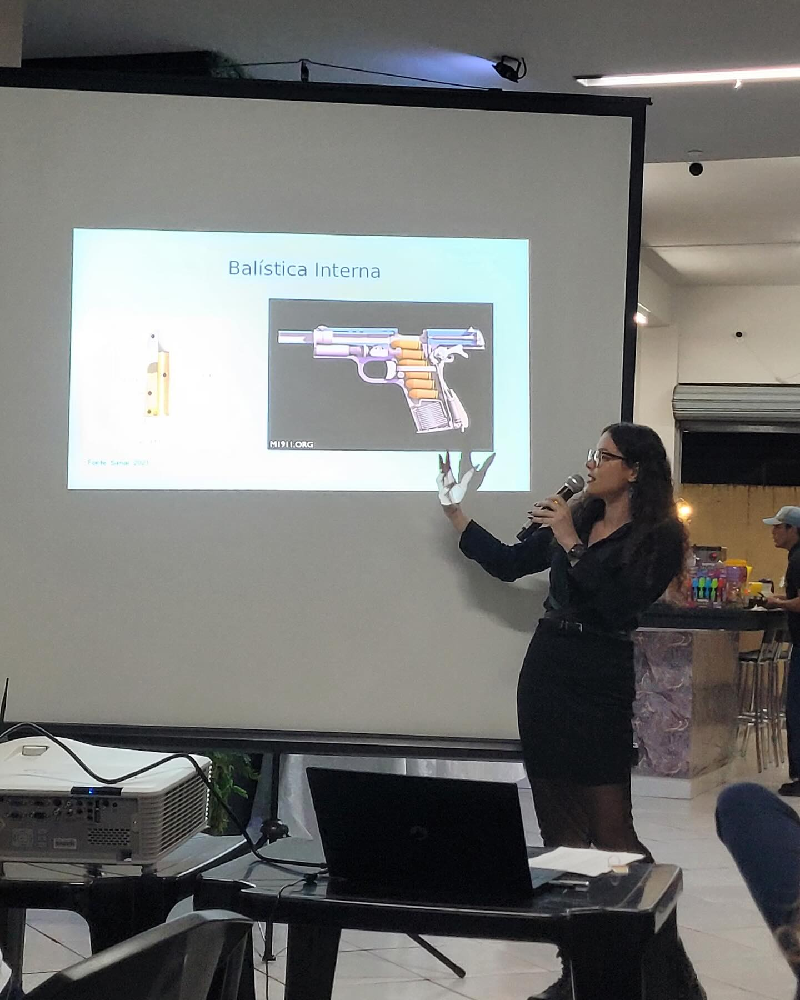
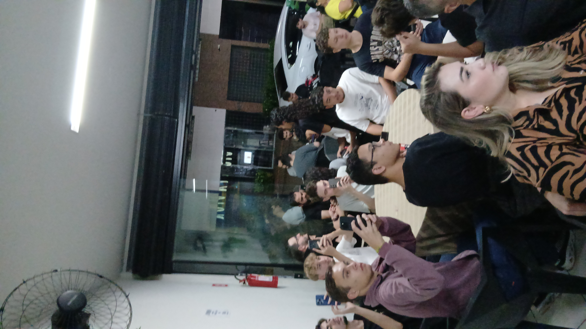
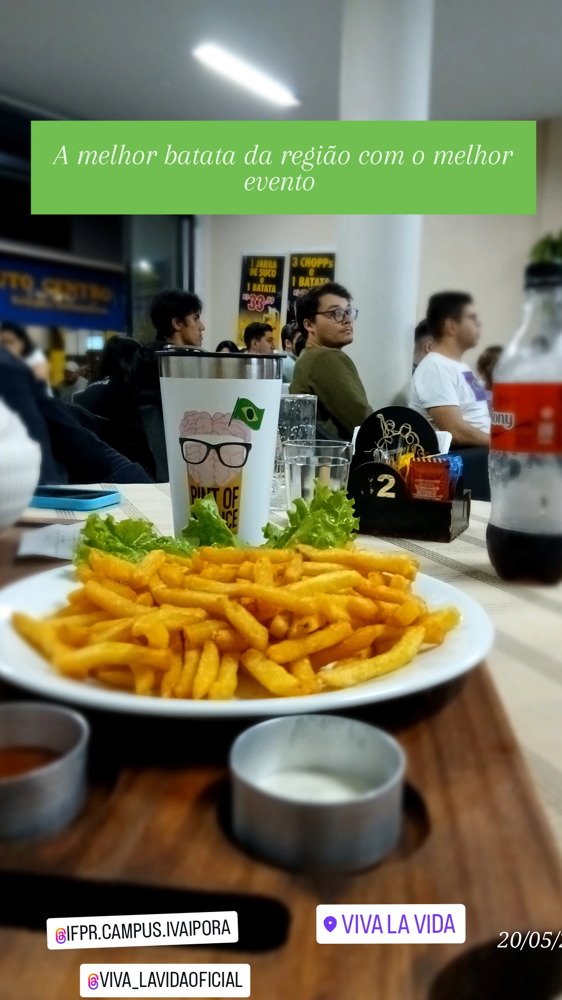
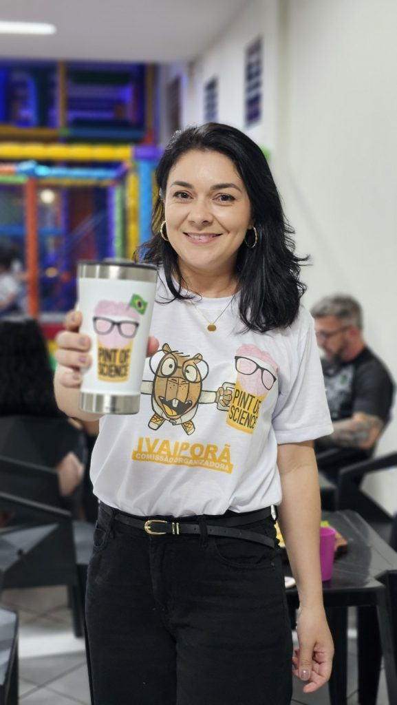
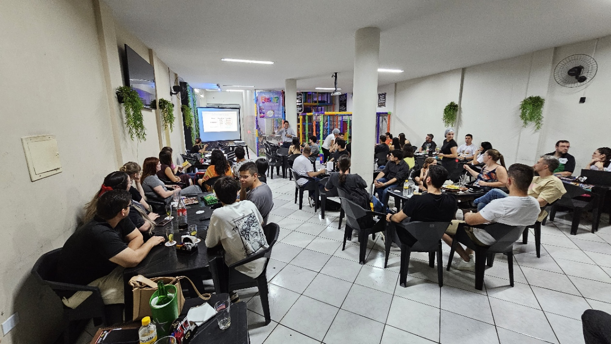
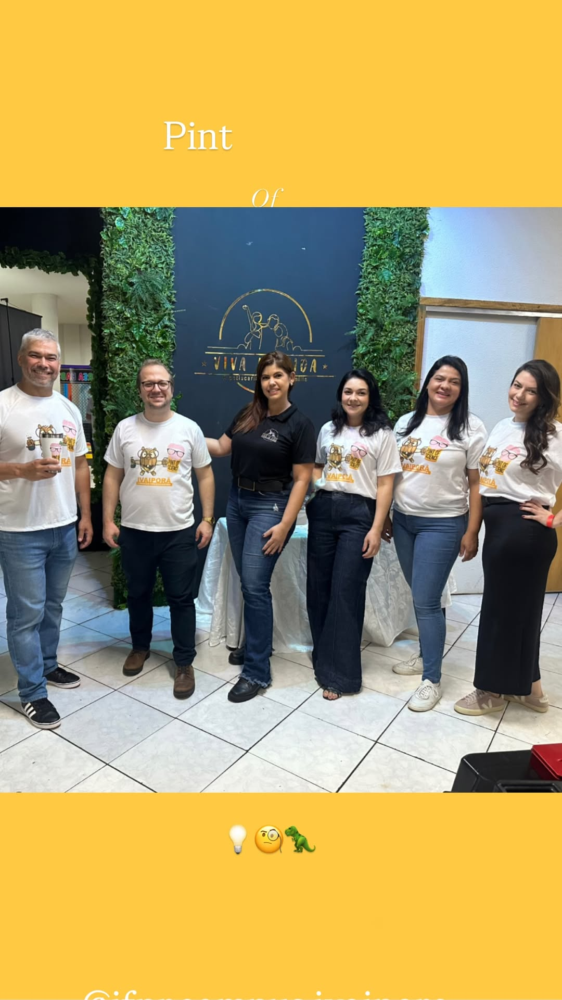
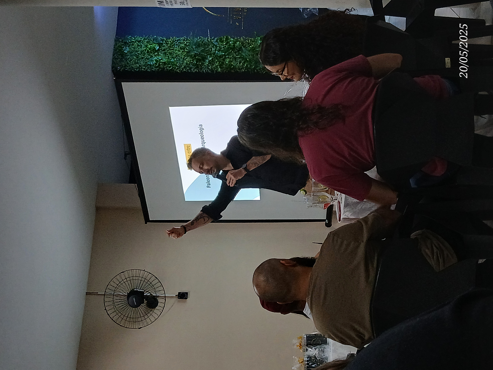
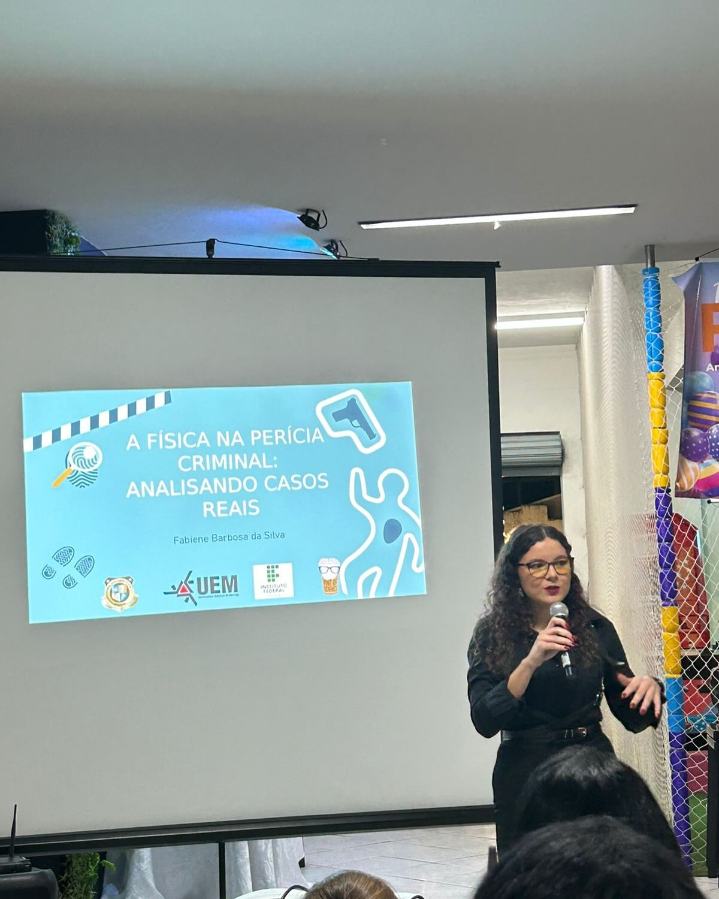
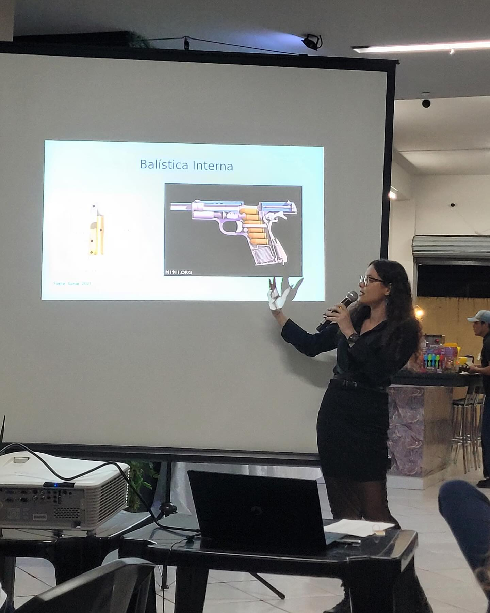
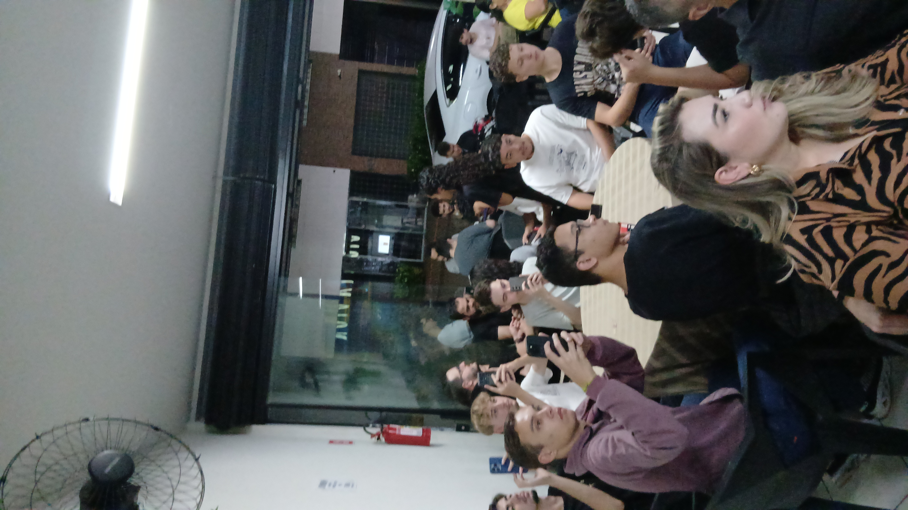
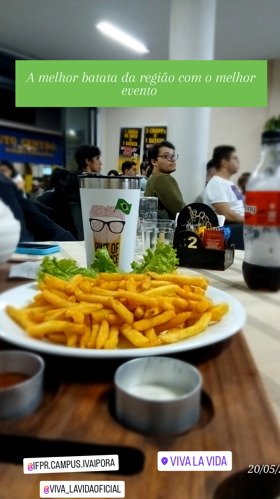
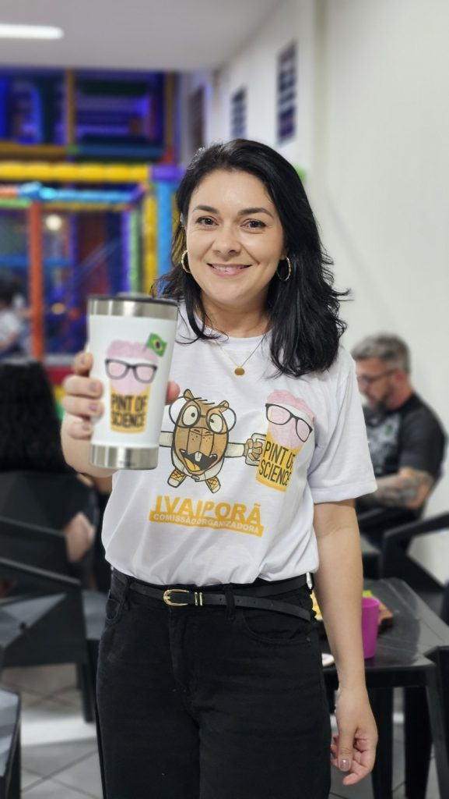
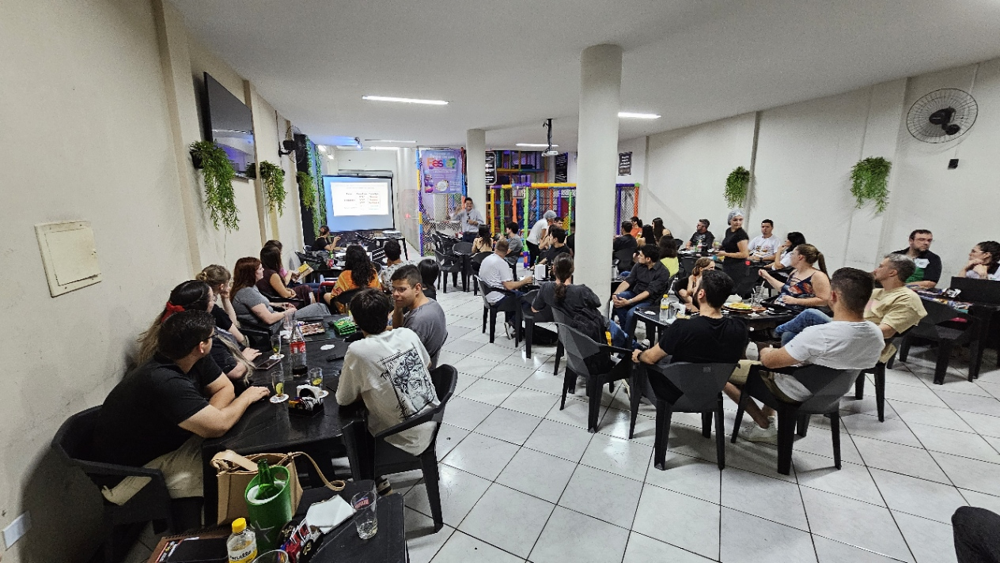
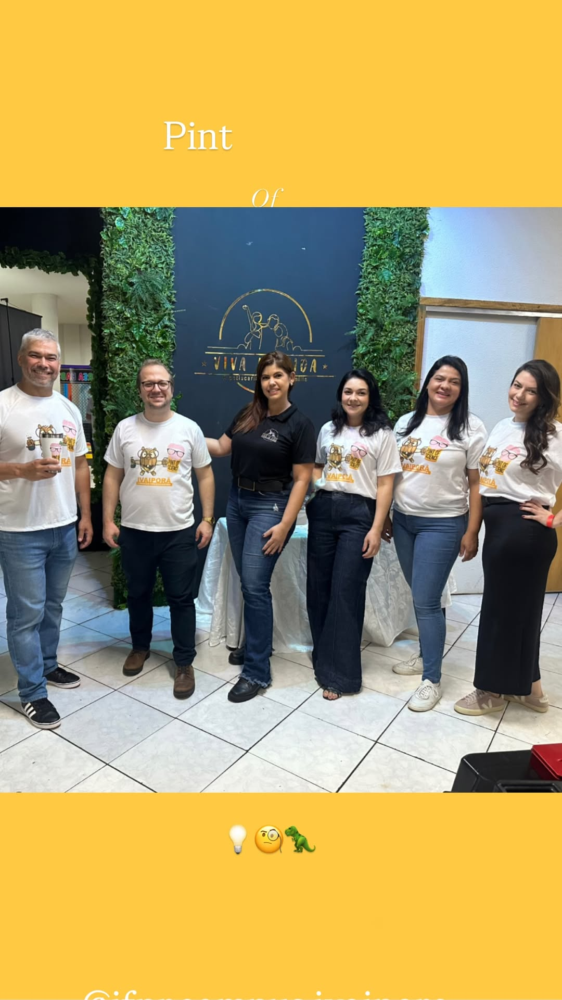
Entre em Contato
Ficou com dúvidas, quer sugerir algo ou participar das próximas edições? Fale com a organização!